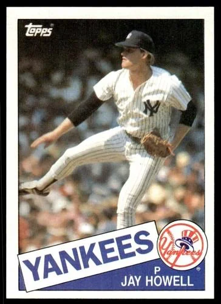

Jay Howell
Career Highlights & Facts
(Facts are AI-generated and may require verification)
- Was a key piece in a blockbuster trade that brought a legendary, record-breaking base-stealing Hall of Famer to his organization.
- His career path included being drafted by the same organization twice, three years apart.
- He was once ejected from a high-stakes postseason game after an umpire discovered a foreign substance on his glove.
Would you like to find out more about Jay Howell?
Career Totals
| WAR | W | L | ERA | G | GS | SV | IP | SO | WHIP |
|---|---|---|---|---|---|---|---|---|---|
| 15.0 | 58 | 53 | 3.34 | 568 | 21 | 155 | 844.2 | 666 | 1.270 |
Statistics via Baseball-Reference.com
The Original Clue